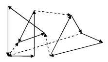

Laura Luo has just invented a game. Given a beautiful pencil sketch with n points, you're to colorize it with water pens by painting circuits. Each time you paint a new circuit, starts with one point, follow some line segments and return to the starting point. Every point can be reached more than once, but every segment can be painted at most once. To make the picture look interesting, different segments must be painted different colors. For each segment, Laura has already decided a direction to paint it. The picture below illustrates a possible way to paint the picture (dashed lines are segments that are not painted).

After you finish painting, your score is computed as follows: for each unit length you paint, you earn x
points, for each color you use, you lost y
points (Laura has prepared enough water pens of different colors).
Write a program to find the maximal score you can get.
The input contains several test cases. The first line of each case contains three positive integers n, x, y
(1 n100, 1x, y1000)
. The next n
lines each describe a point (points are numbered from 1 to n
in the order they appear in the input). The first two integers (x, y)
specify its coordinates
(0x, y1000)
. The rest integers are the points it connects to, ended by a zero. If point v
appears in the list of point u
, there is a line segment connecting u
and v
(then there will not a segment connecting u
and v
in the reverse direction). Furthermore, Laura will paint it from u
to v
. There will be no duplicated points and no more than 500 segments. The last test case is followed by a single zero, which should not be processed.
n100, 1x, y1000)
. The next n
lines each describe a point (points are numbered from 1 to n
in the order they appear in the input). The first two integers (x, y)
specify its coordinates
(0x, y1000)
. The rest integers are the points it connects to, ended by a zero. If point v
appears in the list of point u
, there is a line segment connecting u
and v
(then there will not a segment connecting u
and v
in the reverse direction). Furthermore, Laura will paint it from u
to v
. There will be no duplicated points and no more than 500 segments. The last test case is followed by a single zero, which should not be processed.
For each test case, print the case number and the maximal score you can get, to two decimal places.
4 5 1
0 0 2 3 0
1 0 3 4 0
1 1 4 0
0 1 1 0
1 2 1
0 0 0
10 7 2
0 0 2 4 0
5 0 3 0
5 10 4 10 0
2 3 5 0
7 5 6 0
0 11 1 0
8 0 10 5 0
18 3 7 0
14 5 8 1 0
12 9 9 0
0
Case 1: 16.00
Case 2: 0.00
Case 3: 522.18